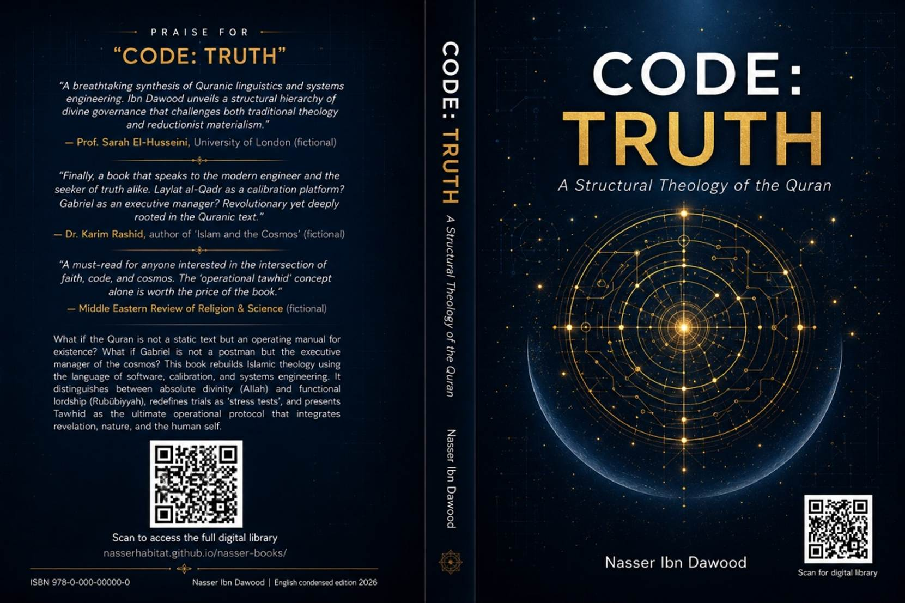

---
Knowledge is a universal right. The author firmly believes that wisdom should not be locked behind paywalls or language barriers.
- **Global Access Policy:** All books in this library are available for free in multiple digital formats (PDF, HTML, DOCX, TXT).
- **The Digital Library:** As of early 2026, the collection hosts 68 volumes (34 in Arabic and 34 in English), fully optimized for AI-assisted research and digital archiving.
- **Official Platforms:**
- Main Website: nasserhabitat.github.io/nasser-books/
- GitHub: nasserhabitat/nasser-books
---
This English edition is a condensed conceptual adaptation. It is not a word-for-word translation, but rather an “extraction of essence.” It presents the core philosophical framework in accessible English, omitting the exhaustive linguistic debates and classical references found in the original Arabic text.
For the academic researcher: The original Arabic version remains the primary source for comprehensive linguistic analysis, detailed exegesis (Tafsir), and the complete bibliography.
---
The greatest intellectual crisis in human history has never been merely about finding a “First Mover” for the universe. It has been about drawing an accurate picture of that Mover – freeing Him from the narrowness of human imagination and lifting Him into the vastness of absolute Truth.
Human thought has swung between two extremes:
- **Mythical anthropomorphism:** imagining God as an enlarged human being – He gets angry, sits on a throne, needs praise.
- **Cold philosophical abstraction:** reducing God to vague energy, a mathematical law, or a meaningless first cause.
This book offers a **third vision**. It reads the cosmos not as dumb matter, but as a **majestic operating system** – whose code, constants, and laws were set in a single hidden moment we call “the Night of Decree” (Laylat al-Qadr). That night was not merely a date on a calendar; it was a **Calibration Platform** that preceded the Big Bang.
---
Human beings, unable to grasp the Absolute, project their own limitations onto the divine. This creates three major distortions:
| Distortion | Description | Quranic Correction |
|------------|-------------|---------------------|
| **Mythical God** | A superhuman king: jealous, sitting somewhere, needing worship | “There is nothing like unto Him” (42:11) |
| **Abstract God** | Pure energy, universal consciousness, a blind law | “Allah is the Ever-Living, the Self-Subsisting” (2:255) |
| **Technical God** | Only a cosmic engineer or programmer (no mercy, no love) | “Lord of the worlds, the Most Gracious, the Most Merciful” (1:2-3) |
The Quran liberates the mind from all three: God is neither a body, nor an idea, nor a machine.
---
Modern materialism looks at nature and says “just physical laws.” The Quran looks at the same phenomena and says “signs (Ayat) for those who reflect.”
- **Nature** → object of study.
- **Sign (Ayah)** → object of meaning, a message to be read.
The Quran uses a network of divine verbs to describe creation: **created, proportioned, decreed, guided, managed, perfected, held together, subjected**. The universe is not just created – it is continuously **operated**.
And the laws of nature are not independent agents. Fire does not burn by itself – it burns by a law that God placed. Gravity does not hold the stars by itself – it holds by divine decree. The system is not an alternative to the Creator; it is a footprint of His command.
---
Many people acknowledge that Allah is the Creator, the Provider, the Manager – yet they do not worship Him alone. They worship money, status, desire, ideology, or even the self.
The Quran makes a sharp distinction:
- **Rububiyyah (Lordship):** God’s actions toward creation – creating, providing, guiding through natural laws.
- **Uluhiyyah (Divinity):** The creature’s response to God – worship, love, total submission, hope and fear directed only to Him.
The pagans of Mecca never denied that Allah created the heavens and earth. Their problem was that they distributed worship among many gods. The Quran’s central battle was not about “God exists” – it was about **“God alone is worthy of worship.”**
Modern idolatry is the same: anything to which you give ultimate love and ultimate obedience – that is your god.
---
The 99 names of Allah are not magical formulas or mere incantations. They are **cognitive windows** through which we see reality.
- Knowing “Al-Raqib” (the Watchful) disciplines your secret thoughts.
- Knowing “Al-Ghafur” (the Forgiving) prevents despair.
- Knowing “Al-Hakim” (the Wise) calms anxiety.
- Knowing “Al-Razzaq” (the Provider) extinguishes greed.
The names work in pairs: “Al-Aziz” (the Almighty) alone would terrify; but with “Al-Rahim” (the Merciful) it brings balance. The supreme name is “Allah” itself – the name that gathers all perfections.
---
Do not imagine physical light. “Allah is the Light of the heavens and the earth” (24:35) means: He is the one who **makes existence appear**, who **reveals meaning**, and who **guides** all creatures.
The Quran also calls the revelation “light”, and faith “light”. Notice a deep structural signal: the Quran always uses “darknesses” in the plural, but “light” in the singular. Because falsehood is many paths, but truth is one.
To lose divine light is to see things but not understand them – to live but never grasp the meaning of life.
---
These terms are often literalized into myths (God sitting on a golden chair). But in Quranic language:
- **Al-Arsh (the Throne):** the center of sovereignty and command.
- **Al-Kursi (the Footstool):** the field of execution – “His Footstool extends over the heavens and the earth” – meaning His authority encompasses everything.
- **Al-Mulk (the Kingdom):** visible authority.
- **Al-Malakut (the Dominion):** the hidden governing structure that runs the universe.
God does not just create and leave. He continuously manages, decrees, and directs. The philosophers’ God is a distant first cause. The Quran’s God is a **present, active Governor**.
---
Combining all six chapters, we can now formulate a functional definition:
> **Allah is the absolute, self-existent Being, unique in divinity, manifested in Lordship, perfect in all attributes, transcendent beyond any likeness, all-encompassing in knowledge, the originator of creation, the appointer of fixed laws, the guide of all creatures by His command, established upon the Throne in sovereign control, dominating the hidden Dominion, close to His servants in knowledge and mercy, manifested as Light and Truth, and worthy of exclusive love, fear, hope and obedience.**
This definition is not a sterile theological formula. It is a **system interface** – the point where human consciousness connects to the operational code of the universe.
---
The Quran distinguishes between two levels of divine action:
- **The World of Command (’Alam al-Amr):** the software layer – laws, decrees, constants, and parameters written in the “Preserved Tablet” before physical reality began.
- **The World of Creation (’Alam al-Khalq):** the hardware layer – the actual material universe that emerged from the Big Bang.
Laylat al-Qadr (the Night of Decree) is not just a night in Ramadan when the Quran was first revealed. In its deepest sense, it is the **eternal calibration platform** where every cosmic constant was set: the speed of light, the force of gravity, the charge of the electron. The Quranic revelation to Muhammad was a **reminder and display** of that same primordial command.
No randomness. No waste. No incoherence. The universe runs on a precise, hard-coded program.
---
If the universe is a coded system, then it requires a reader, a conscious operator. That operator is the human being.
God gave humans tools to receive light: intellect (’aql), innate disposition (fitrah), the heart, hearing, and sight. These are not passive senses – they are **decoding instruments**.
The real test (trial) is: can you keep the connection with your Creator while navigating the material world? Can you see every event – hardship or ease – as a lesson from the great Designer?
This is the **engineering of trial**. It is not random punishment. It is a feedback loop designed to refine your consciousness. Poverty, illness, loss – they are not signs of divine hatred. They are **calibration events** that reveal your true relationship with your Lord.
---
How does the divine command travel from the absolute Unseen to our material world? The Quran provides a functional hierarchy:
| Concept | Engineering Analogy | Role |
|---------|---------------------|------|
| Al-Arsh (Throne) | Root-level server / command center | Issue of decrees and storage of the original code |
| Al-Istiwa’ (Established upon the Throne) | System activation | Beginning of the execution of laws |
| Angels | Executable protocols / data carriers | Carrying out the decrees, moving galaxies, cells, and rain |
| Al-Rahman (the Most Gracious) | Universal communication protocol | Creating bonds (between cause and effect, soul and body, revelation and reality) |
| The Human | System operator | Reading signs, maintaining the bond of worship while engaging with matter |
Without the property of “Al-Rahman” – which literally means the connection and bonding – the universe would disintegrate into isolated fragments. Everything stays together because divine mercy holds every link.
---
We have traveled from the correction of distorted images to the reading of cosmic signs, from Lordship to Divinity, from the Names to Light, from the Throne to the Night of Decree, and finally to the human being as a conscious operator.
All of this converges on one central truth:
> **Monotheism (Tawhid) is not a sentence you say. It is a protocol you run.**
The protocol has two layers:
1. **Affirming Rububiyyah (Lordship):** God alone created, sustains, governs, and provides. Nothing happens outside His system.
2. **Living Uluhiyyah (Divinity):** God alone is worthy of your ultimate love, your ultimate fear, your ultimate hope, and your ultimate obedience. Break the modern idols – money, fame, power, desire, ideology, the self.
The great knowledge triangle of this book:
- **The Manifested Universe** → shows God’s power and precise decree (the hardware).
- **The Written Quran** → shows God’s guidance and commands (the software).
- **The Perceived Human** → shows the capacity for response and worship (the operator).
When these three align, knowledge reaches its peak. You see the universe as a living book. You read the Quran as a living instruction. And you find yourself – not as a helpless speck, but as a dignified steward expected to read, understand, and submit.
---
This book is an **open draft**, not a sacred text. Every idea is open to revision, criticism, addition, and deletion. Certainty belongs only to the Quran itself – never to any human understanding.
The author invites every thoughtful reader – whether in agreement or disagreement – to become a partner in this cumulative intellectual project. Not an opponent who shuts the door, nor a follower who lacks insight.
For truth does not fear criticism, and light is not extinguished by objections.
---
**Nasser Ibn Dawood**
Digital Library – January 2026
---
*This condensed translation is approximately 8-10 pages in standard formatting. It captures the core structural insights of the original 11-chapter work while omitting detailed linguistic debates and classical citations. The full Arabic original (68 volumes as of 2026) remains the authoritative source for deep research.*
Translation of the new version of the book
## A moral summary of the book "The System of Truth: From the Night of Appreciation to the Engineering of Affliction"
### English Summary for Foreign Reader
**Proposed title of the abbreviation:**
**Author:** Nasser Ibn Dawood
**Version:** Conceptual Condensation – Addressed to the Western reader.
---
### Translator's Note and Global Manifesto
Before presenting the essence of this book, we place in the hands of the reader the intellectual manifesto that governs this entire project.
---
#### I. The Global Knowledge Manifesto
Knowledge is a universal right. The author firmly believes that wisdom should not be locked behind paywalls or language barriers.
- **Global Access Policy:** All books in this library are available for free in multiple digital formats (PDF, HTML, DOCX, TXT).
- **The Digital Library:** As of early 2026, the collection hosts 68 volumes (34 in Arabic and 34 in English), fully optimized for AI‑assisted research and digital archiving.
- **Official Platforms:**
- Main Website: [nasserhabitat.github.io/nasser-books/](https://nasserhabitat.github.io/nasser-books/)
- GitHub: nasserhabitat/nasser-books
#### II. Translator's Note: The Bridge of Meaning
This English edition is a condensed conceptual adaptation. It is **not** a word‑for‑word translation, but rather an "extraction of essence." It presents the core philosophical framework in accessible English, omitting the exhaustive linguistic debates and classical references found in the original Arabic text.
For the academic researcher: The original Arabic version remains the primary source for comprehensive linguistic analysis, detailed exegesis (Tafsir), and the complete bibliography.
---
### Executive Summary of "System of Truth" (approx. 25–30 pages equivalent)
#### Introduction: The Crisis of Divine Representation
Throughout history, humanity has struggled to conceive God without falling into three major distortions:
1. **The Mythological God** – a super‑human being who sits on a throne, feels anger like humans, and needs praise.
2. **The Philosophical God** – an abstract energy, a cosmic law, or a pantheistic presence that dissolves the Creator into creation.
3. **The Scientific God** – a mere "Intelligent Designer" or "Grand Programmer" who forgets mercy, guidance, and proximity.
The Quran offers a fourth path: a **structural theology** that combines absolute transcendence (`{لَيْسَ كَمِثْلِهِ شَيْءٌ}` – "Nothing is like Him") with functional immanence (His names, actions, and signs in the universe). This book rebuilds the Islamic worldview using the language of systems, software, and engineering – not to reduce God to a machine, but to understand the **operating code** of existence.
---
#### Part One: The Architecture of the Universe – From Nature to Ayah
**1. The Universe is Not "Nature" but "Ayah" (Sign)**
Modern materialism sees the cosmos as a mute, self‑running mechanism. The Quran sees it as a **living book of signs** addressed to human intelligence.
- `{إِنَّ فِي خَلْقِ السَّمَاوَاتِ وَالْأَرْضِ لَآيَاتٍ}` – "Indeed, in the creation of the heavens and the earth are signs."
- The scientist studies the *mechanism*; the believer reads the *message*.
**2. The Network of Divine Actions**
The Quran does not describe creation with one word but with a **network of verbs** that resemble the stages of a complex engineering project:
| Quranic Term | Engineering Analogy |
|--------------|----------------------|
| *Khalq* (خلق) | Creation / Emergence |
| *Sawwā* (سوّى) | Optimisation / Balancing |
| *Qaddara* (قدّر) | Calibration / Setting constants |
| *Hadā* (هدى) | Hard‑coded guidance / Function assignment |
| *Dabbara* (دبّر) | Continuous system management |
| *Aḥkama* (أحكم) | Quality assurance / No flaw |
The universe is not a random explosion but a **fine‑tuned, calibrated, and constantly administered system**.
**3. The Laws (Sunnan) are Not Independent**
Fire does not burn by itself, water does not quench thirst by itself. These are **execution layers** of a higher command. The verse `{يَا نَارُ كُونِي بَرْدًا وَسَلَامًا}` – "O fire, be cool and safe for Abraham" – proves that natural laws are **protocols** that can be suspended or overridden by the Sovereign.
---
#### Part Two: The Sovereignty Hierarchy – From the Throne to the Human Operator
**1. The Throne (`‘Arsh`) as the Root Directory**
The verse `{الرَّحْمَٰنُ عَلَى الْعَرْشِ اسْتَوَىٰ}` is often misunderstood as physical sitting. In structural theology, the Throne is the **centre of cosmic command**, the root server from which all decrees originate. "Istawā" (استوى) means the **activation of the system** – the moment when the eternal code becomes an operating reality.
**2. Gabriel (`Jibrā’īl`) as the Executive Manager**
In popular Islamic culture, Gabriel is reduced to a "postman" who delivers verses and leaves. This book restores his **functional lordship** (Rubūbiyyah) based on Quranic evidence:
- `{شَدِيدُ الْقُوَىٰ}` – "Possessor of great power"
- `{ذُو مِرَّةٍ فَاسْتَوَىٰ}` – "One of soundness and strength"
- `{مُطَاعٍ ثَمَّ أَمِينٍ}` – "Obeyed there (in the high assembly) and trustworthy"
Gabriel is the **System Administrator** who receives the absolute command from God, breaks it down into executable protocols, and delegates tasks to the angels. He is a "functional lord" – not a god, but the highest executive officer.
**3. The Angels as System Protocols**
Angels are not mythical creatures with wings; they are **specialised functional units**:
| Angelic Team | Function |
|--------------|----------|
| *Al‑Mudabbirāt* (المدبرات) | Cosmic management (winds, rains, orbits) |
| *Al‑Nāzi‘āt* (النازعات) | Extraction of souls (death) |
| *Al‑Ṣāffāt* (الصافات) | Maintaining cosmic order |
| *Al‑Muqassimāt* (المقسمات) | Distributing provisions |
They are perfect, obedient, and tireless – like background services (daemons) in a computer.
**4. The Human as `Khalīfah` (System Operator)**
`{إِنِّي جَاعِلٌ فِي الْأَرْضِ خَلِيفَةً}` – "I am placing a vicegerent on earth."
The human being is the only creature entrusted with **free will, reason, and the ability to read the signs**. He is the **interface manager** between the written code (Quran) and the physical hardware (universe). His mission is to cultivate the earth according to divine instructions.
---
#### Part Three: Laylat al‑Qadr – The Night of Cosmic Calibration
**1. Two Dimensions of the "Night"**
- **Cosmic / Eternal (`Laylat al‑Qadr`):** The moment before the Big Bang when God decreed all constants, laws, and destinies. `{فِيهَا يُفْرَقُ كُلُّ أَمْرٍ حَكِيمٍ}` – "Every wise command is made distinct."
- **Historical / Revelatory:** The night in Ramadan when the Quran was sent down to Muhammad as a **reminder and reactivation** of that primordial code.
Thus, the "Night" is not merely a date to search for; it is the **calibration platform** of existence.
**2. Why the Confusion?**
Traditional literature turned this cosmic event into a riddle to be solved every year (is it the 21st, 23rd, 27th night?). This distraction (`ta‘miyah zamāniyyah`) shifts attention from the **Giver** (Gabriel and God) to the **time slot**. The deeper teaching is: `{إِنَّ الَّذِي تَطْلُبُ أَمَامَكَ}` – "What you seek is before you." The divine presence and decree are **now**, not in a future date.
---
#### Part Four: The Engineering of Trial (Balā’)
**1. Redefining Trial**
Trial (`balā’`, ابتلاء) is not punishment. In engineering, a **stress test** pushes a system beyond normal limits to measure its integrity. Similarly, God tests humans with fear, hunger, loss, and gain to:
- Reveal the quality of faith.
- Train patience and gratitude.
- Raise ranks without punishment.
**2. The Role of Gabriel and Angels in Trials**
- Gabriel receives the order for a trial from the Throne.
- He assigns relevant angels (e.g., Angel of Death, Angel of Mountains, Angels of Affliction) to execute it.
- The physical causes (virus, earthquake, poverty) are the **instrumental layer**; the true actor is the divine command through the executive hierarchy.
**3. Human Response – From Fear to Engineering**
Instead of panicking, the believer should:
1. **Seek material causes** (take medicine, work, protect himself).
2. **Pray and supplicate** (spiritual causes change destiny).
3. **Be patient and content** (`ṣabr wa riḍā`).
4. **Learn from the trial** – self‑upgrade.
---
#### Part Five: Tawhid – The Ultimate Operating Protocol
**1. Tawhid is Not a Mere Statement**
"Lā ilāha illā Allāh" is not a slogan. It is the **protocol** that ensures:
- **Unity of reference:** All decisions return to God alone.
- **Coherence of reality:** No conflicting gods = no conflicting laws.
- **Integration of knowledge:** Science (studying the universe) and religion (following revelation) are two faces of the same truth.
**2. The Great Triangle of Knowledge**
| Corner | Content | Function |
|--------|---------|----------|
| **Written Quran** | Scripture / Revelation | Software (commands, values, laws) |
| **Manifested Universe** | Nature / Cosmos | Hardware (physical laws, signs) |
| **Human Being** | The self / Khalīfah | Operator (understanding, choosing, acting) |
When these three are aligned, the human being achieves **operational integrity** – he worships God, studies nature, and builds civilisation in harmony.
**3. Worship as System Reset**
Traditional worship is often reduced to ritual. This book presents it as **functional calibration**:
| Act of Worship | Engineering Meaning |
|----------------|----------------------|
| Prayer (`Ṣalāh`) | Consciousness reboot – disconnecting from distractions, reconnecting to the centre. |
| Alms (`Zakāh`) | Wealth recalibration – preventing pathological accumulation, redistributing resources. |
| Fasting (`Ṣawm`) | Desire regulation – breaking addiction, preparing for spiritual reception. |
| Pilgrimage (`Ḥajj`) | Identity reset – equality, unity, and returning to origin. |
| Remembrance (`Dhikr`) | Awareness refresh – keeping the system connected to its source. |
---
#### Conclusion: From Mythology to Structural Consciousness
This book is not a traditional theology text. It is a **bridge** between the language of the Quran and the mindset of the modern engineer, scientist, or philosopher.
**The key takeaways for the Western reader:**
1. **God is not a human projection** (neither a sky‑king nor an abstract energy). He is the absolute source of command, whose transcendence is protected by `{لَيْسَ كَمِثْلِهِ شَيْءٌ}` and whose actions are seen in the fine‑tuning of the universe.
2. **The universe is a message, not a mute machine.** Studying physics, chemistry, and biology is a form of reading God's signs.
3. **Gabriel is the Executive Manager** of the cosmos – not a demigod, but the highest authorised officer who runs the system under God's sole authority.
4. **Laylat al‑Qadr is the original calibration event** – the point when the source code of existence was installed.
5. **Trials are stress tests**, not punishments. They are designed to upgrade the human soul.
6. **Tawhid (monotheism) is an operational protocol** that integrates revelation, nature, and human action into one coherent system.
The author does not claim infallibility. This is an open, evolving structural reading of the Quran. The original Arabic text remains the ultimate reference. But for the English‑speaking seeker of truth, this condensed version offers a **map** – a way to see Islam not as a collection of rituals, but as a **comprehensive operational manual for existence**.
---
**End of condensed version – approximately 28 pages equivalent.**
*For the full academic discussion, including detailed linguistic analysis, traditional hadith criticism, and comprehensive bibliography, please refer to the original Arabic edition of "Manẓūmat al‑Ḥaqq".*